O cardápio da casa.
As 12 páginas do cardápio original fornecido para o projeto. Para encontrar um prato rapidamente, use também a busca na página principal. Toque em uma página para abrir em tamanho original. Preços e disponibilidade estão sujeitos a confirmação.
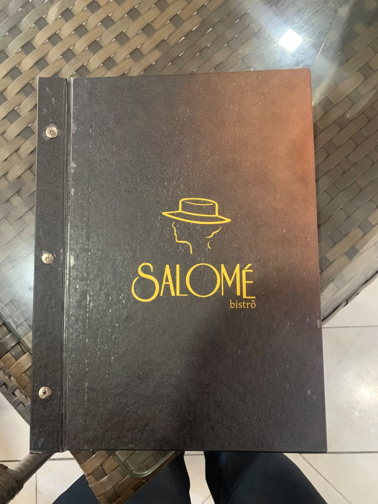
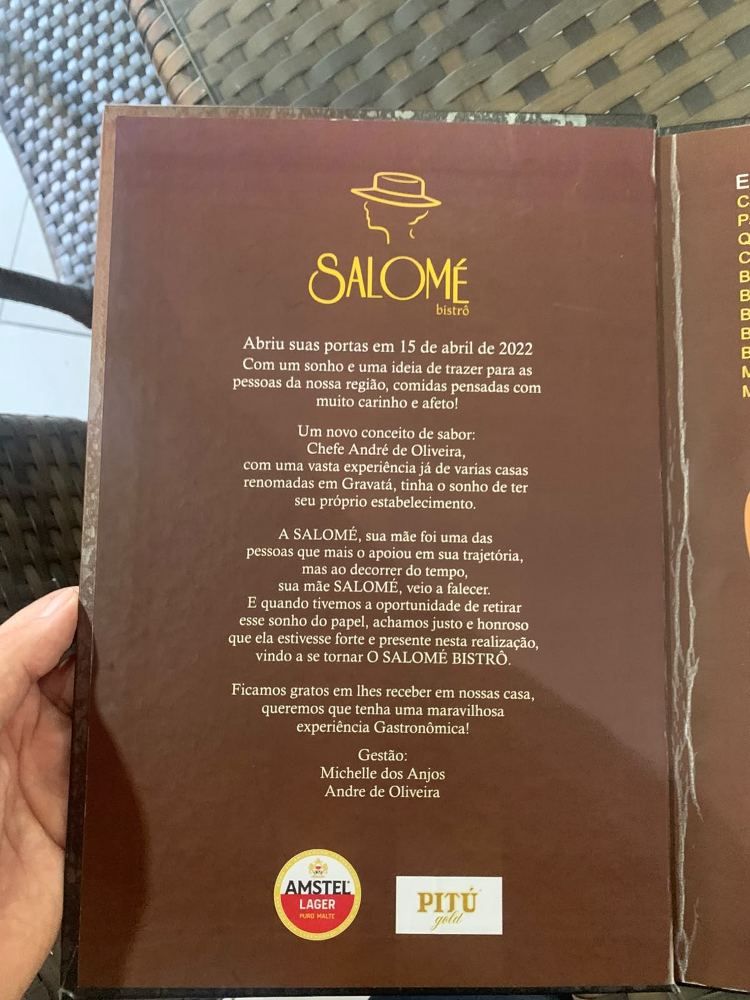
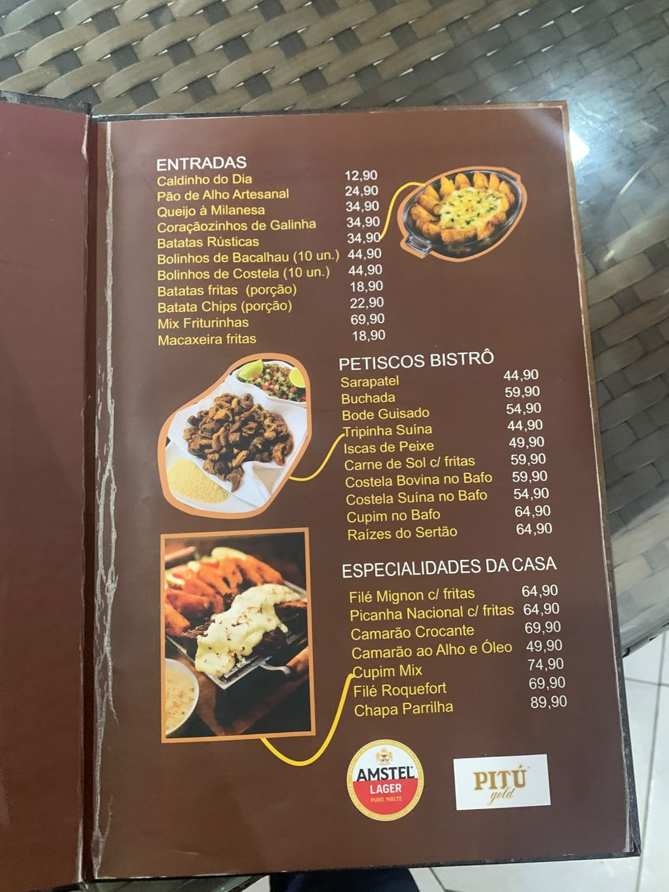
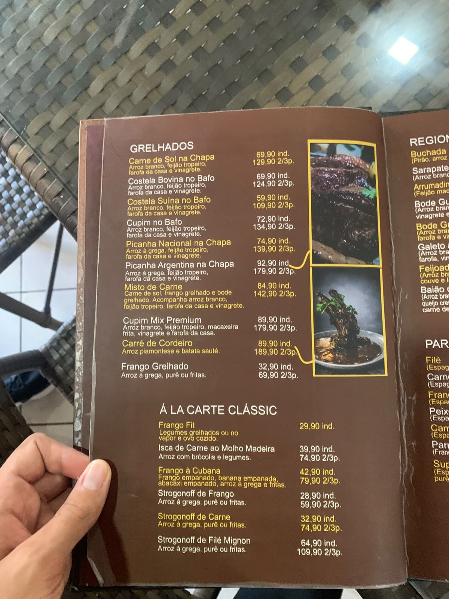
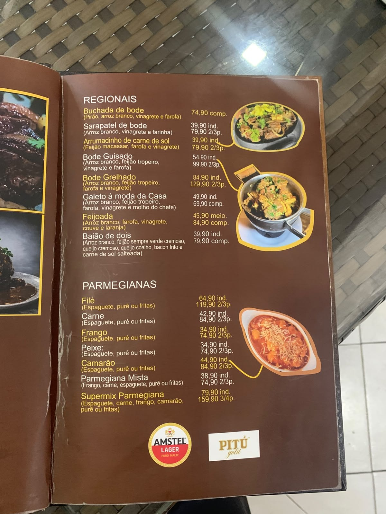
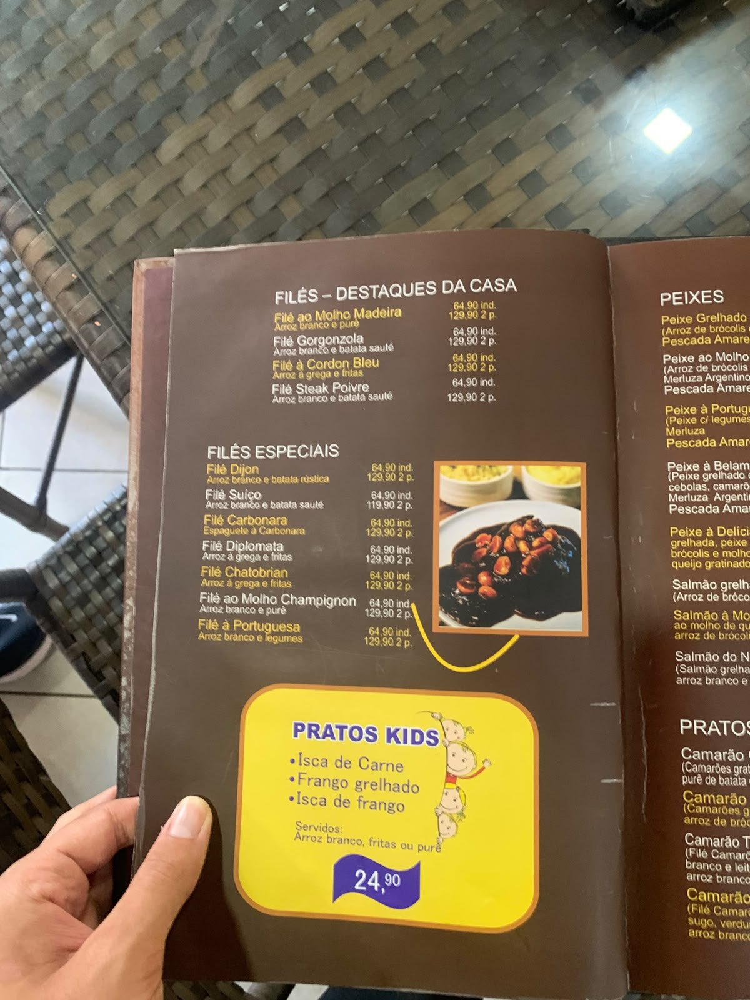
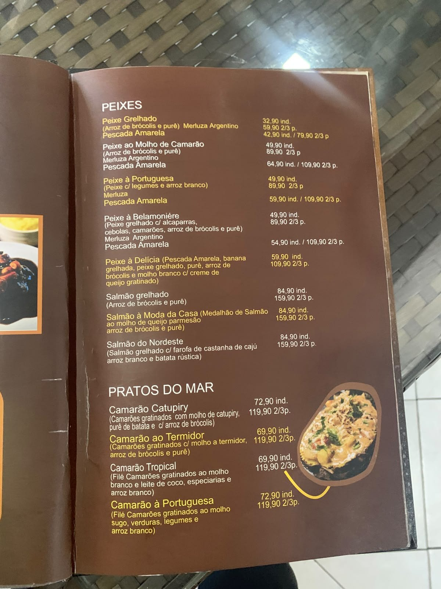
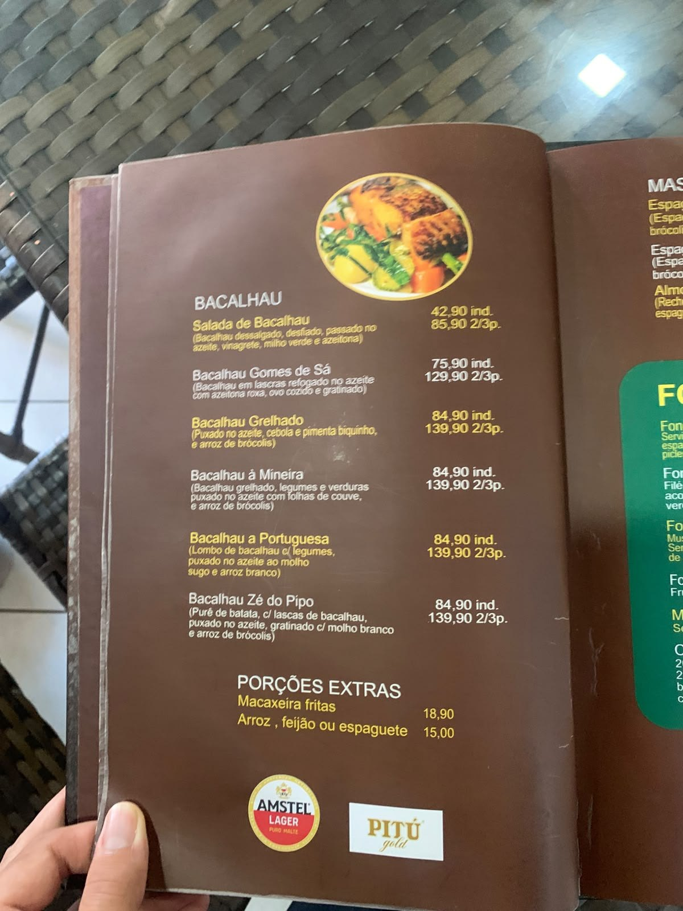
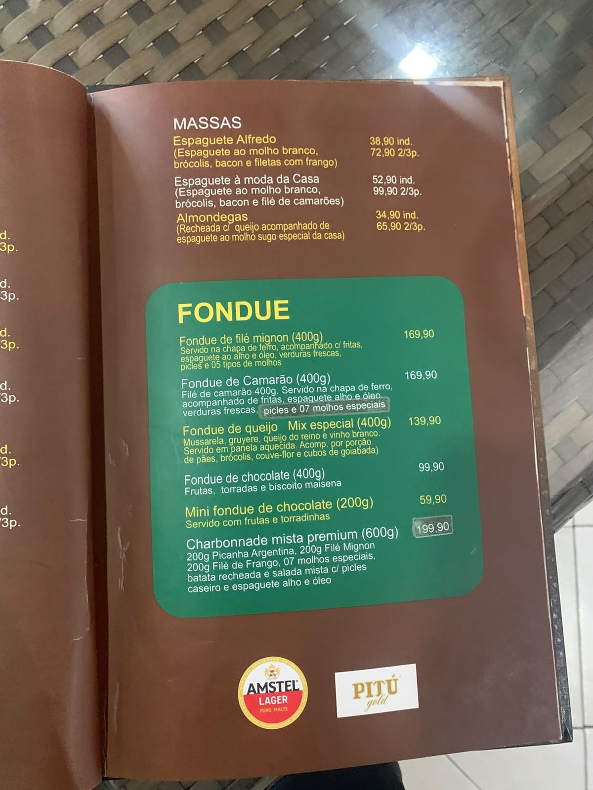
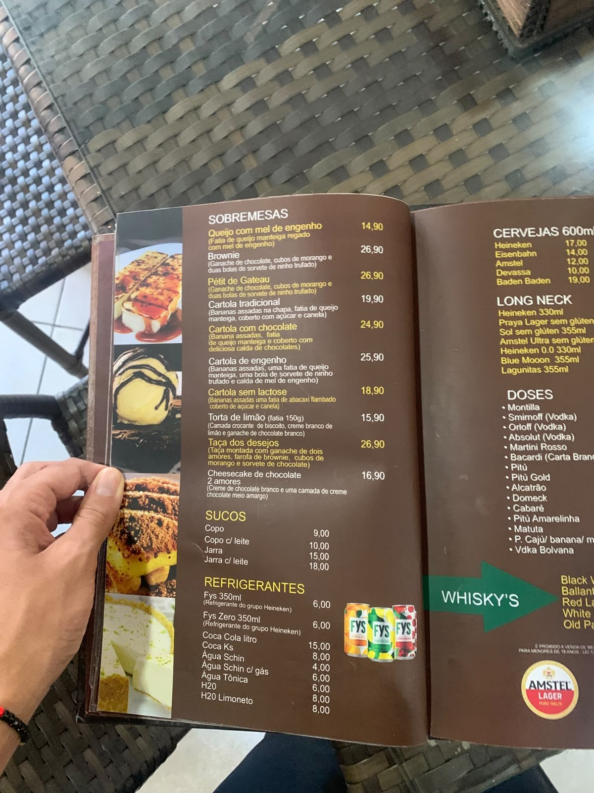
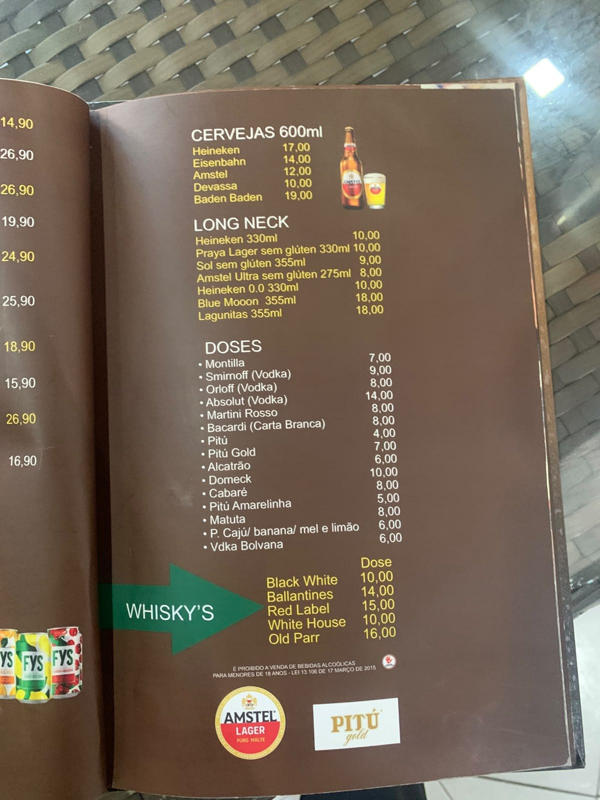
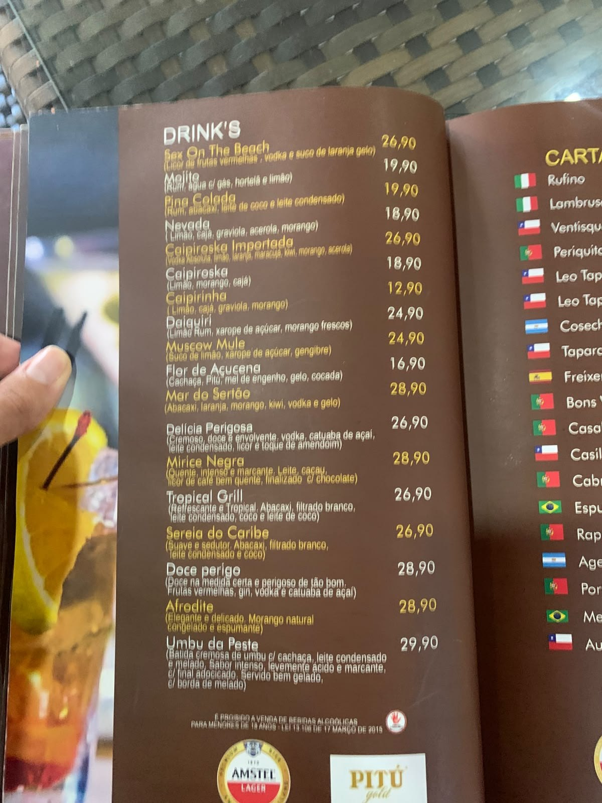